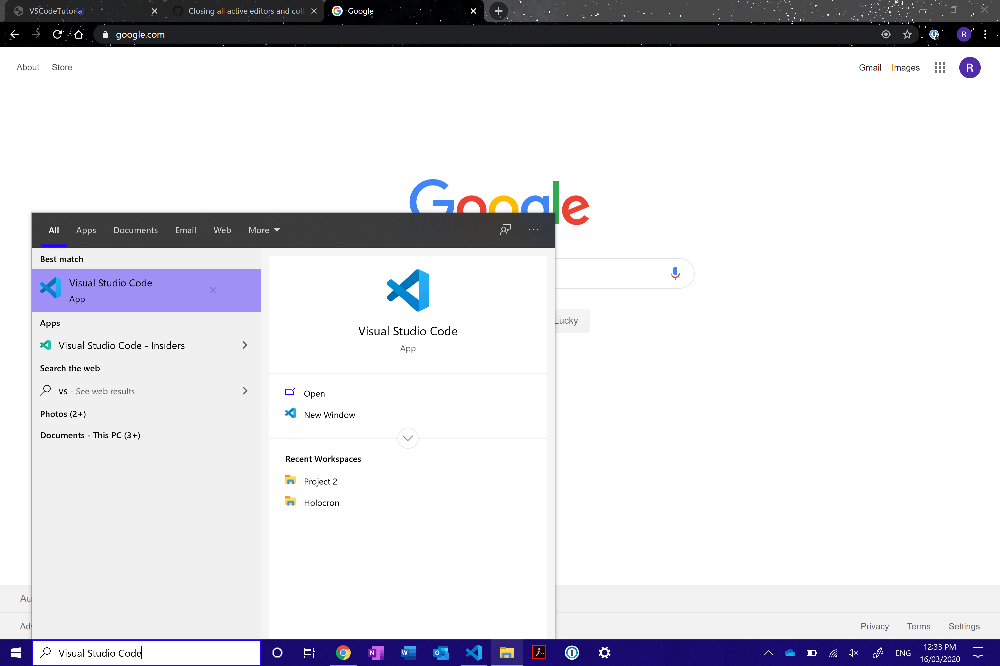
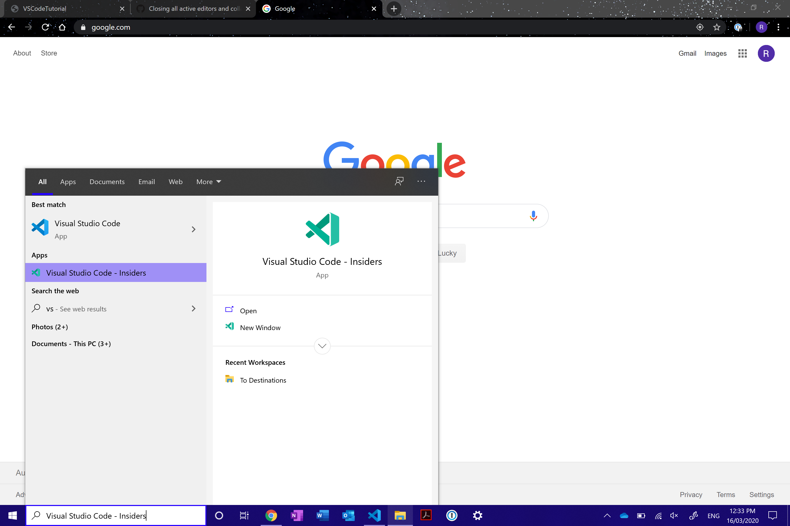
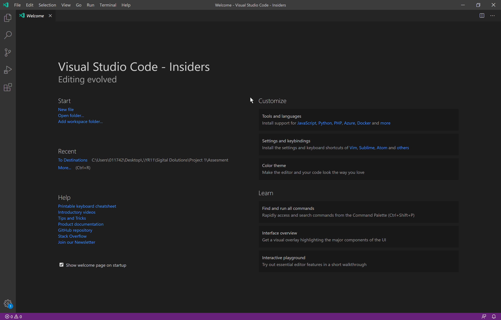
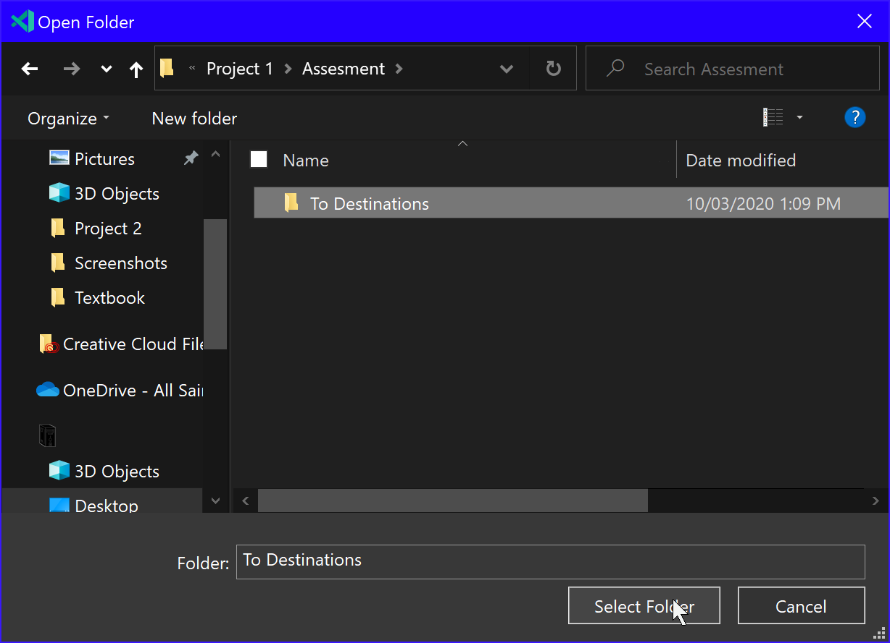
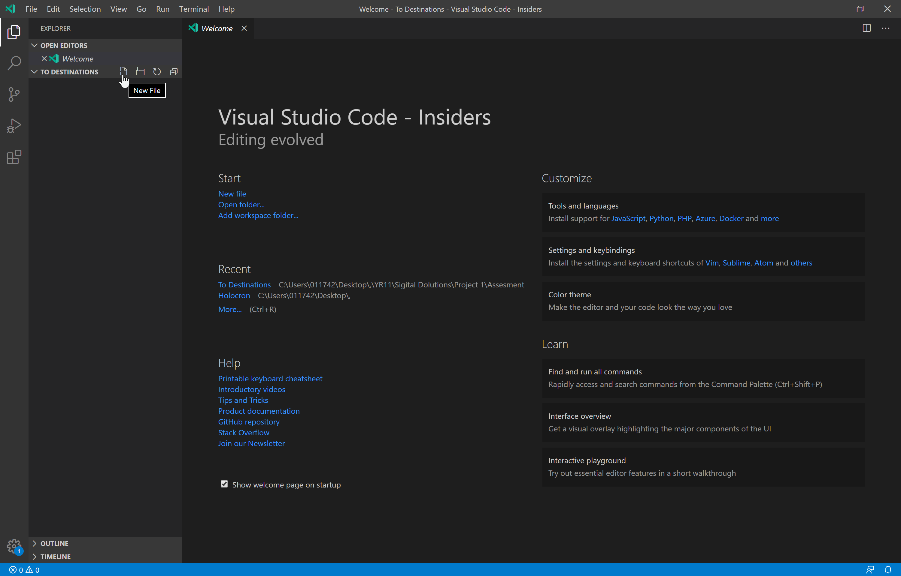
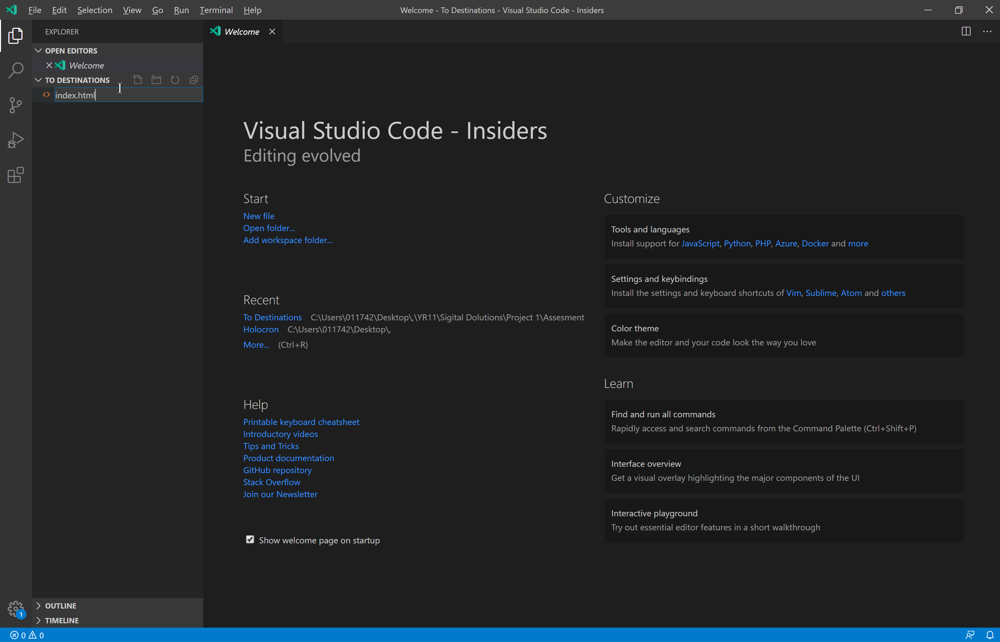
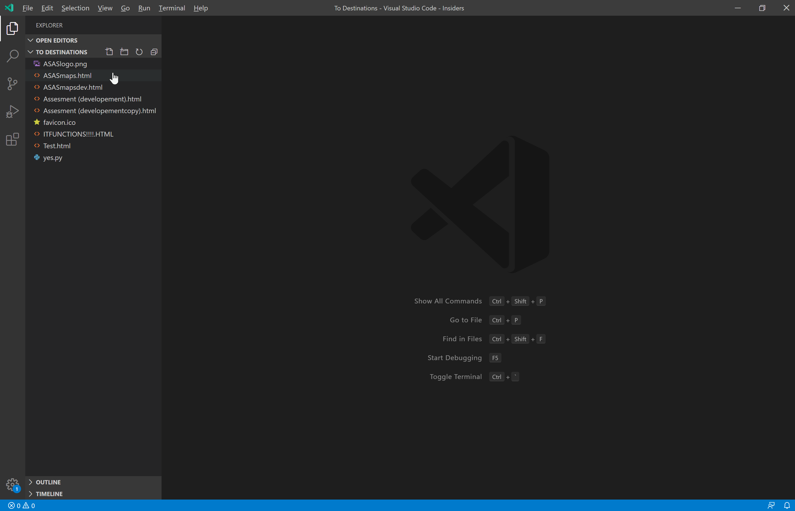
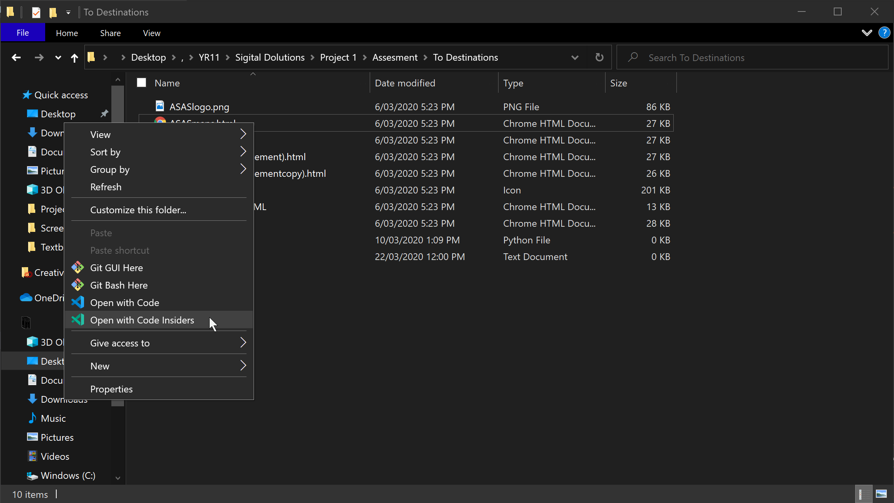
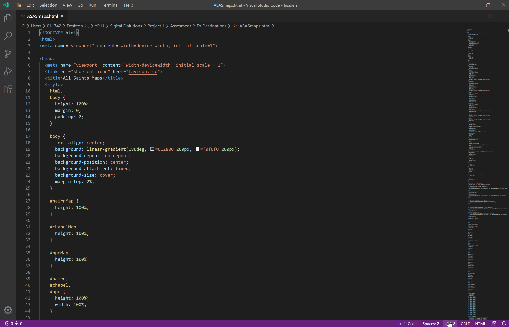

If you intended to click one of the other options, please otherwise continue reading to find out how to set up VS Code.
1. Find and open VS Code (you can do this by pressing the window/mac key depending on your device, and typing 'vs' to search, and clicking on the app titled "Visual Studio Code Code").
2. Upon clicking on the app, Code will open, which will show a screen with a few startup options (If you are using it for the first time you may not have any recent files).

3. there are two ways of going about this now, I would recommend opening a folder, as it means that you can create files into the folder in addition to keeping the pre-existing files.
A)
B)
If you meant to open an individual file, else, continue reading.
To open a new folder, the first step you have to follow is click the "open a new folder" button that should be visible.

Then, a popup of the windows file explorer will appear. Locate and click on the folder ( if you want to open an empty folder, or to open a folder with pre-existing files in it) you want to open, then press "Select Folder"

Once you have opened your empty folder (if you opened a folder with pre-existing files in it, scroll back up and click the pre-existing files option), you will need to create a code file. To do this, hover over the project name, then click the button that looks like a dog-eared page with a plus on it.

Then, a text box with a text file icon next to it (It looks like 4 horizontal lines, with every second one half the size of the one above it) will appear, type what you would like the file name to be, with the file extension type (I used 'index.html') and press 'enter' on your keyboard.

Now, the file has been created for you to start building. Once the file is created in Code, it is automatically saved into your file explorer, and as you edit it, saving it (ctrl + s) will update the changes in the file explorer.
Once you have opened your folder with pre-existing files, you will see all of the files in the folder sorted alphabetically. You are now able to click on whichever file you would like to open, and it will launch in Code. If you edit files, you can save (by pressing ctrl + s on you keyboard) and the changes will be made and logged in your file explorer as well as Code.

If you meant to open a folder, else, continue reading.
Opening a single file is relatively simple. First, you will need to go into your file explorer. Then, you will need to find the folder in which your file is in. Now, hover over the file you wish to open, right-click on it, and click on the 'Open with Code Code'.

Your file will now open in Code, allowing you to edit it. After making changes to the document, you can press ctrl + s on your keyboard to save the file, saving the changes to the file explorer as well as in Code.

If you intended to click one of the other options, please otherwise continue reading to find out how to set up VS Insiders.
1. Find and open VS Insiders (you can do this by pressing the window/mac key depending on your device, and typing 'vs' to search, and clicking on the app titled "Visual Studio Code - Insiders").
2. Upon clicking on the app, Insiders will open, which will show a screen with a few startup options (If you are using it for the first time you may not have any recent files).
3. there are two ways of going about this now, I would recommend opening a folder, as it means that you can create files into the folder as well.
A)
B)
If you meant to open an individual file, else, continue reading.
To open a new folder, the first step you have to follow is click the "open a new folder" button that should be visible.
Then, a popup of the windows file explorer will appear. Locate and click on the folder ( if you want to open an empty folder, or to open a folder with pre-existing files in it) you want to open, then press "Select Folder"
Once you have opened your empty folder (if you opened a folder with pre-existing files in it, scroll back up and click the pre-existing files option), you will need to create a code file. To do this, hover over the project name, then click the button that looks like a dog-eared page with a plus on it.
Then, a text box with a text file icon next to it (It looks like 4 horizontal lines, with every second one half the size of the one above it) will appear, type what you would like the file name to be, with the file extension type (I used 'index.html') and press 'enter' on your keyboard.
Now, the file has been created for you to start building. Once the file is created in Insiders, it is automatically saved into your file explorer, and as you edit it, saving it (ctrl + s) will update the changes in the file explorer.
Once you have opened your folder with pre-existing files, you will see all of the files in the folder sorted alphabetically. You are now able to click on whichever file you would like to open, and it will launch in Insiders. If you edit files, you can save (by pressing ctrl + s on you keyboard) and the changes will be made and logged in your file explorer as well as Insiders.
If you meant to open a folder, else, continue reading.
Opening a single file is relatively simple. First, you will need to go into your file explorer. Then, you will need to find the folder in which your file is in. Now, hover over the file you wish to open, right-click on it, and click on the 'Open with Code Insiders'.
Your file will now open in Insiders, allowing you to edit it. After making changes to the document, you can press ctrl + s on your keyboard to save the file, saving the changes to the file explorer as well as in Insiders.
